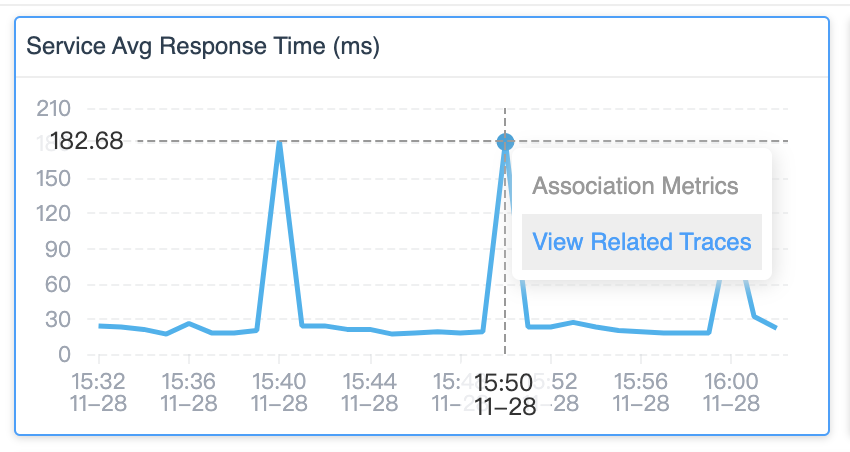
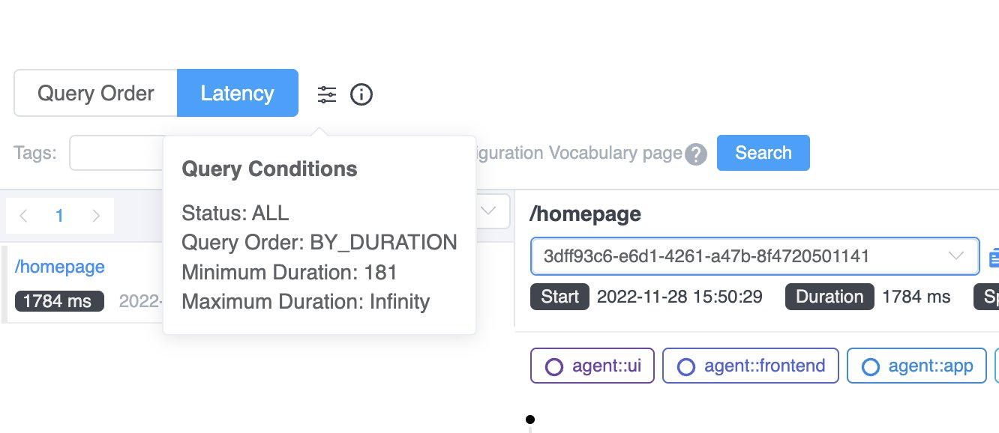
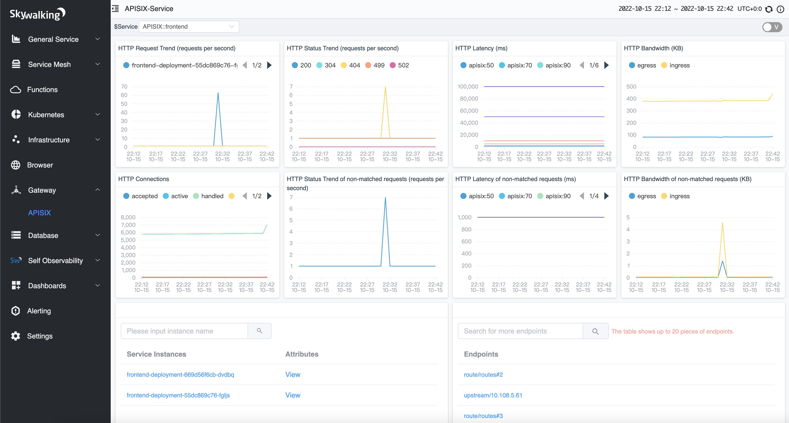
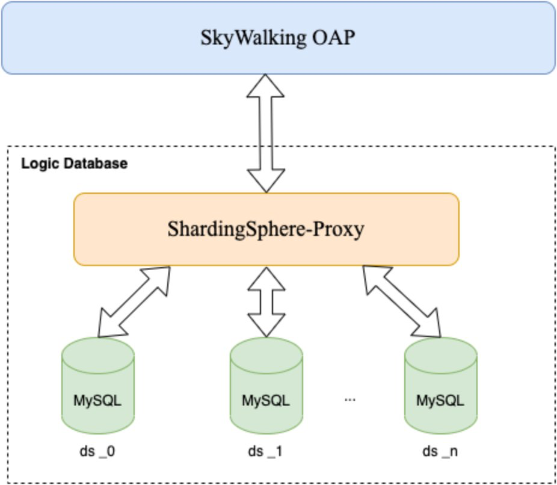
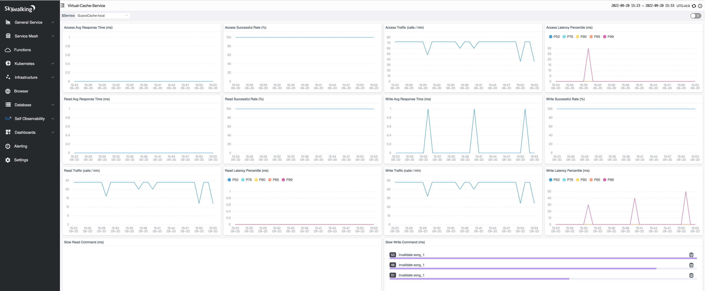
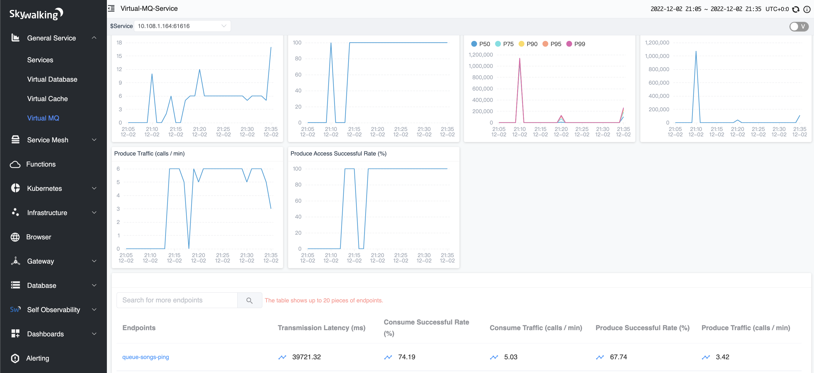

SkyWalking 9.3.0 is released. Go to downloads page to find release tars.
Metrics Association
| Dashboard | Pop-up Trace Query |
|---|---|
 |
 |
APISIX Dashboard

Use Sharding MySQL as the Database

Virtual Cache Performance

Virtual MQ Performance

Project
- Bump up the embedded
swctlversion in OAP Docker image.
OAP Server
- Add component ID(133) for impala JDBC Java agent plugin and component ID(134) for impala server.
- Use prepareStatement in H2SQLExecutor#getByIDs.(No function change).
- Bump up snakeyaml to 1.32 for fixing CVE.
- Fix
DurationUtils.convertToTimeBucketmissed verify date format. - Enhance LAL to support converting LogData to DatabaseSlowStatement.
- [Breaking Change] Change the LAL script format(Add layer property).
- Adapt ElasticSearch 8.1+, migrate from removed APIs to recommended APIs.
- Support monitoring MySQL slow SQLs.
- Support analyzing cache related spans to provide metrics and slow commands for cache services from client side
- Optimize virtual database, fix dynamic config watcher NPE when default value is null
- Remove physical index existing check and keep template existing check only to avoid meaningless
retry waitinno-initmode. - Make sure instance list ordered in TTL processor to avoid TTL timer never runs.
- Support monitoring PostgreSQL slow SQLs.
- [Breaking Change] Support sharding MySQL database instances and tables by Shardingsphere-Proxy. SQL-Database requires removing tables
log_tag/segment_tag/zipkin_querybefore OAP starts, if bump up from previous releases. - Fix meter functions
avgHistogram,avgHistogramPercentile,avgLabeled,sumHistogramhaving data conflict when downsampling. - Do sorting
readLabeledMetricsValuesresult forcedly in case the storage(database) doesn’t return data consistent with the parameter list. - Fix the wrong watch semantics in Kubernetes watchers, which causes heavy traffic to API server in some Kubernetes clusters, we should use
Get State and Start at Most Recentsemantic instead ofStart at Exactbecause we don’t need the changing history events, see https://kubernetes.io/docs/reference/using-api/api-concepts/#semantics-for-watch. - Unify query services and DAOs codes time range condition to
Duration. - [Breaking Change]: Remove prometheus-fetcher plugin, please use OpenTelemetry to scrape Prometheus metrics and set up SkyWalking OpenTelemetry receiver instead.
- BugFix: histogram metrics sent to MAL should be treated as OpenTelemetry style, not Prometheus style:
(-infinity, explicit_bounds[i]] for i == 0 (explicit_bounds[i-1], explicit_bounds[i]] for 0 < i < size(explicit_bounds) (explicit_bounds[i-1], +infinity) for i == size(explicit_bounds) - Support Golang runtime metrics analysis.
- Add APISIX metrics monitoring
- Support skywalking-client-js report empty
service versionandpage path, set default version aslatestand default page path as/(root). Fix the errorfetching data (/browser_app_page_pv0) : Can't split endpoint id into 2 parts. - [Breaking Change] Limit the max length of trace/log/alarm tag’s
key=value, set the max length of columntagsin tableslog_tag/segment_tag/alarm_record_tagand columnqueryinzipkin_queryand columntag_valueintag_autocompleteto 256. SQL-Database requires altering these columns’ length or removing these tables before OAP starts, if bump up from previous releases. - Optimize the creation conditions of profiling task.
- Lazy load the Kubernetes metadata and switch from event-driven to polling. Previously we set up watchers to watch the Kubernetes metadata changes, this is perfect when there are deployments changes and SkyWalking can react to the changes in real time. However when the cluster has many events (such as in large cluster or some special Kubernetes engine like OpenShift), the requests sent from SkyWalking becomes unpredictable, i.e. SkyWalking might send massive requests to Kubernetes API server, causing heavy load to the API server. This PR switches from the watcher mechanism to polling mechanism, SkyWalking polls the metadata in a specified interval, so that the requests sent to API server is predictable (~10 requests every
interval, 3 minutes), and the requests count is constant regardless of the cluster’s changes. However with this change SkyWalking can’t react to the cluster changes in time, but the delay is acceptable in our case. - Optimize the query time of tasks in ProfileTaskCache.
- Fix metrics was put into wrong slot of the window in the alerting kernel.
- Support
sumPerMinLabeledinMAL. - Bump up jackson databind, snakeyaml, grpc dependencies.
- Support export
TraceandLogthrough Kafka. - Add new config initialization mechanism of module provider. This is a ModuleManager lib kernel level change.
- [Breaking Change] Support new records query protocol, rename the column named
service_idtoentity_idfor support difference entity. Please re-createtop_n_database_statementindex/table. - Remove improper self-obs metrics in JvmMetricsHandler(for Kafka channel).
- gRPC stream canceling code is not logged as an error when the client cancels the stream. The client cancels the stream when the pod is terminated.
- [Breaking Change] Change the way of loading MAL rules(support pattern).
- Move k8s relative MAL files into
/otel-rules/k8s. - [Breaking Change] Refactor service mesh protobuf definitions and split TCP-related metrics to individual definition.
- Add
TCP{Service,ServiceInstance,ServiceRelation,ServiceInstanceRelation}sources and split TCP-related entities out from originalService,ServiceInstance,ServiceRelation,ServiceInstanceRelation. - [Breaking Change] TCP-related source names are changed, fields of TCP-related sources are changed, please refer to the latest
oal/tcp.oalfile. - Do not log error logs when failed to create ElasticSearch index because the index is created already.
- Add virtual MQ analysis for native traces.
- Support Python runtime metrics analysis.
- Support
sampledTracein LAL. - Support multiple rules with different names under the same layer of LAL script.
- (Optimization) Reduce the buffer size(queue) of MAL(only) metric streams. Set L1 queue size as 1/20, L2 queue size as 1/2.
- Support monitoring MySQL/PostgreSQL in the cluster mode.
- [Breaking Change] Migrate to BanyanDB v0.2.0.
- Adopt new OR logical operator for,
MeasureIDsqueryBanyanDBProfileThreadSnapshotQueryDAOquery- Multiple
Eventconditions query - Metrics query
- Simplify Group check and creation
- Partially apply
UITemplatechanges - Support
index_only - Return
CompletableFuture<Void>directly from BanyanDB client - Optimize data binary parse methods in *LogQueryDAO
- Support different indexType
- Support configuration for TTL and (block|segment) intervals
- Adopt new OR logical operator for,
- Elasticsearch storage: Provide system environment variable(
SW_STORAGE_ES_SPECIFIC_INDEX_SETTINGS) and support specify the settings(number_of_shards/number_of_replicas)for each index individually. - Elasticsearch storage: Support update index settings
(number_of_shards/number_of_replicas)for the index template after rebooting. - Optimize MQ Topology analysis. Use entry span’s peer from the consumer side as source service when no producer instrumentation(no cross-process reference).
- Refactor JDBC storage implementations to reuse logics.
- Fix
ClassCastExceptioninLoggingConfigWatcher. - Support span attached event concept in Zipkin and SkyWalking trace query.
- Support span attached events on Zipkin lens UI.
- Force UTF-8 encoding in
JsonLogHandlerofkafka-fetcher-plugin. - Fix max length to 512 of entity, instance and endpoint IDs in trace, log, profiling, topN tables(JDBC storages). The value was 200 by default.
- Add component IDs(135, 136, 137) for EventMesh server and client-side plugins.
- Bump up Kafka client to 2.8.1 to fix CVE-2021-38153.
- Remove
lengthEnvVariableforColumnas it never works as expected. - Add
LongTextto support longer logs persistent as a text type in ElasticSearch, instead of a keyword, to avoid length limitation. - Fix wrong system variable name
SW_CORE_ENABLE_ENDPOINT_NAME_GROUPING_BY_OPENAPI. It was opaenapi. - Fix not-time-series model blocking OAP boots in no-init mode.
- Fix
ShardingTopologyQueryDAO.loadServiceRelationsDetectedAtServerSideinvoke backend miss parameterserviceIds. - Changed system variable
SW_SUPERDATASET_STORAGE_DAY_STEPtoSW_STORAGE_ES_SUPER_DATASET_DAY_STEPto be consistent with other ES storage related variables. - Fix ESEventQueryDAO missing metric_table boolQuery criteria.
- Add default entity name(
_blank) if absent to avoid NPE in the decoding. This causedCan't split xxx id into 2 parts. - Support dynamic config the sampling strategy in network profiling.
- Zipkin module support BanyanDB storage.
- Zipkin traces query API, sort the result set by start time by default.
- Enhance the cache mechanism in the metric persistent process.
- This cache only worked when the metric is accessible(readable) from the database. Once the insert execution is delayed due to the scale, the cache loses efficacy. It only works for the last time update per minute, considering our 25s period.
- Fix ID conflicts for all JDBC storage implementations. Due to the insert delay, the JDBC storage implementation would still generate another new insert statement.
- [Breaking Change] Remove
core/default/enableDatabaseSessionconfig. - [Breaking Change] Add
@BanyanDB.TimestampColumnto identifywhich column in Recordis providing the timestamp(milliseconds) for BanyanDB, since BanyanDB stream requires a timestamp in milliseconds. For SQL-Database: add new columntimestampfor tablesprofile_task_log/top_n_database_statement, requires altering this column or removing these tables before OAP starts, if bump up from previous releases. - Fix Elasticsearch storage: In
No-Sharding Mode, add specific analyzer to the template before index creation to avoid update index error. - Internal API: remove undocumented ElasticSearch API usage and use documented one.
- Fix
BanyanDB.ShardingKeyannotation missed in the generated OAL metrics classes. - Fix Elasticsearch storage: Query
sortMetricsmissing transform real index column name. - Rename
BanyanDB.ShardingKeytoBanyanDB.SeriesID. - Self-Observability: Add counters for metrics reading from DB or cached. Dashboard:
Metrics Persistent Cache Count. - Self-Observability: Fix
GC Timecalculation. - Fix Elasticsearch storage: In
No-Sharding Mode, column’s propertyindexOnlynot applied and cannot be updated. - Update the
trace_idfield as storage only(cannot be queried) intop_n_database_statement,top_n_cache_read_command,top_n_cache_read_commandindex.
UI
- Fix: tab active incorrectly, when click tab space
- Add impala icon for impala JDBC Java agent plugin.
- (Webapp)Bump up snakeyaml to 1.31 for fixing CVE-2022-25857
- [Breaking Change]: migrate from Spring Web to Armeria, now you should use the environment variable
name
SW_OAP_ADDRESSto change the OAP backend service addresses, likeSW_OAP_ADDRESS=localhost:12800,localhost:12801, and use environment variableSW_SERVER_PORTto change the port. Other Spring-related configurations don’t take effect anymore. - Polish the endpoint list graph.
- Fix styles for an adaptive height.
- Fix setting up a new time range after clicking the refresh button.
- Enhance the process topology graph to support dragging nodes.
- UI-template: Fix metrics calculation in
general-service/mesh-service/faas-functiontop-list dashboard. - Update MySQL dashboard to visualize collected slow SQLs.
- Add virtual cache dashboard.
- Remove
responseCodefields of all OAL sources, as well as examples to avoid user’s confusion. - Remove All from the endpoints selector.
- Enhance menu configurations to make it easier to change.
- Update PostgreSQL dashboard to visualize collected slow SQLs.
- Add Golang runtime metrics and cpu/memory used rate panels in General-Instance dashboard.
- Add gateway apisix menu.
- Query logs with the specific service ID.
- Bump d3-color from 3.0.1 to 3.1.0.
- Add Golang runtime metrics and cpu/memory used rate panels in FaaS-Instance dashboard.
- Revert logs on trace widget.
- Add a sub-menu for virtual mq.
- Add
readRecordsto metric types. - Verify dashboard names for new dashboards.
- Associate metrics with the trace widget on dashboards.
- Fix configuration panel styles.
- Remove a un-use icon.
- Support labeled value on the service/instance/endpoint list widgets.
- Add menu for virtual MQ.
- Set selector props and update configuration panel styles.
- Add Python runtime metrics and cpu/memory utilization panels to General-Instance and Fass-Instance dashboards.
- Enhance the legend of metrics graph widget with the summary table.
- Add apache eventMesh logo file.
- Fix conditions for trace profiling.
- Fix tag keys list and duration condition.
- Fix typo.
- Fix condition logic for trace tree data.
- Enhance tags component to search tags with the input value.
- Fix topology loading style.
- Fix update metric processor for the readRecords and remove readSampledRecords from metrics selector.
- Add trace association for FAAS dashboards.
- Visualize attached events on the trace widget.
- Add HTTP/1.x metrics and HTTP req/resp body collecting tabs on the network profiling widget.
- Implement creating tasks ui for network profiling widget.
- Fix entity types for ProcessRelation.
- Add trace association for general service dashboards.
Documentation
- Add
metadata-uidsetup doc about Kubernetes coordinator in the cluster management. - Add a doc for adding menus to booster UI.
- Move general good read blogs from
Agent IntroductiontoAcademy. - Add re-post for blog
Scaling with Apache SkyWalkingin the academy list. - Add re-post for blog
Diagnose Service Mesh Network Performance with eBPFin the academy list. - Add Security Notice doc.
- Add new docs for
Report Span Attached Eventsdata collecting protocol. - Add new docs for
Recordquery protocol - Update
Server AgentsandCompatibilityfor PHP agent. - Add docs for profiling.
- Update the network profiling documentation.
All issues and pull requests are here